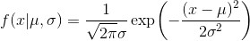
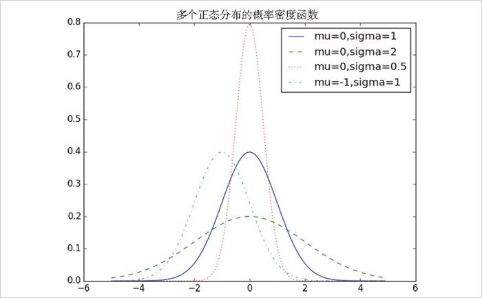
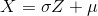
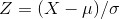
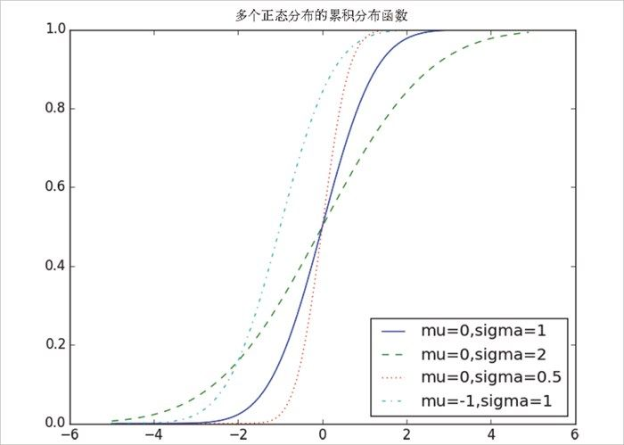

6.6 正态分布
正态分布是分布之王！它是典型的钟型曲线形态分布函数，可以完全由两个参数决定：均值 μ （mu）和标准差 σ （sigma）。均值描述钟型曲线的中心，标准差描述曲线有多“宽”。
正态分布的分布函数如下：

我们可以这样实现：
def normal_pdf(x, mu=0, sigma=1):
sqrt_two_pi = math.sqrt(2 * math.pi)
return (math.exp(-(x-mu) ** 2 / 2 / sigma ** 2) / (sqrt_two_pi * sigma))
在图 6-2 中我们绘出了这些概率密度函数，来看看它们的形状如何：
xs = [x / 10.0 for x in range(-50, 50)]
plt.plot(xs,[normal_pdf(x,sigma=1) for x in xs],'-',label='mu=0,sigma=1')
plt.plot(xs,[normal_pdf(x,sigma=2) for x in xs],'--',label='mu=0,sigma=2')
plt.plot(xs,[normal_pdf(x,sigma=0.5) for x in xs],':',label='mu=0,sigma=0.5')
plt.plot(xs,[normal_pdf(x,mu=-1) for x in xs],'-.',label='mu=-1,sigma=1')
plt.legend()
plt.title("多个正态分布的概率密度函数")
plt.show()

图 6-2：多个正态分布的概率密度函数
如果 μ =0 并且 σ =1，这个分布称为标准正态分布。如果 Z 是服从标准正态分布的随机变量，则有如下转换式：

其中 X 也是正态分布，但均值是 μ ，标准差是 σ 。相反，如果 X 是均值为 μ 标准差为 σ 的正态分布，那么：

是标准正态分布的随机变量。
标准正态分布的累积分布函数无法用“基本”的解析形式表示，但在 Python 中可以用函数 math.erf 描述：
def normal_cdf(x, mu=0,sigma=1):
return (1 + math.erf((x - mu) / math.sqrt(2) / sigma)) / 2
我们再绘出一系列概率累积分布函数（如图 6-3）：
xs = [x / 10.0 for x in range(-50, 50)]
plt.plot(xs,[normal_cdf(x,sigma=1) for x in xs],'-',label='mu=0,sigma=1')
plt.plot(xs,[normal_cdf(x,sigma=2) for x in xs],'--',label='mu=0,sigma=2')
plt.plot(xs,[normal_cdf(x,sigma=0.5) for x in xs],':',label='mu=0,sigma=0.5')
plt.plot(xs,[normal_cdf(x,mu=-1) for x in xs],'-.',label='mu=-1,sigma=1')
plt.legend(loc=4) # 底部右边
plt.title("多个正态分布的累积分布函数")
plt.show()

图 6-3：多个正态分布的累积分布函数
我们有时会需要对 normal_cdf 取逆，从而可以求出特定的概率的相应值。不存在计算逆函数的简便方法，但由于 normal_cdf 连续且严格递增，因而我们可以使用二分查找（https://en.wikipedia.org/wiki/Binary_search_algorithm ）的方法：
def inverse_normal_cdf(p, mu=0, sigma=1, tolerance=0.00001):
"""find approximate inverse using binary search"""
# 如果非标准型，先调整单位使之服从标准型
if mu != 0 or sigma != 1:
return mu + sigma * inverse_normal_cdf(p, tolerance=tolerance)
low_z, low_p = -10.0, 0 # normal_cdf(-10)是（非常接近）0
hi_z, hi_p = 10.0, 1 # normal_cdf(10)是（非常接近）1
while hi_z - low_z > tolerance:
mid_z = (low_z + hi_z) / 2 # 考虑中点
mid_p = normal_cdf(mid_z) # 和cdf在那里的值
if mid_p < p:
# midpoint仍然太低，搜索比它大的值
low_z, low_p = mid_z, mid_p
elif mid_p > p:
# midpoint仍然太高，搜索比它小的值
hi_z, hi_p = mid_z, mid_p
else:
break
return mid_z
这个函数反复分割区间，直到分割到一个足够接近于期望概率的精细的 Z 值。